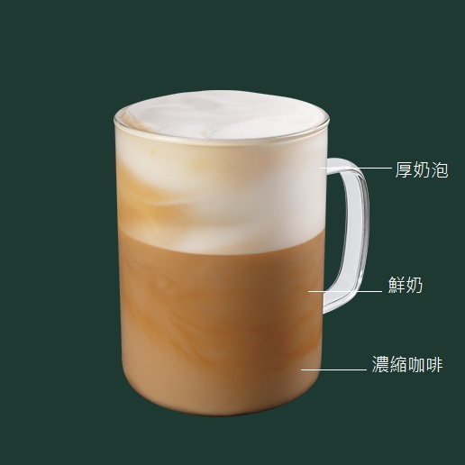

Cappuccino 卡布奇諾
卡布奇諾與拿鐵咖啡的差別在於多了奶泡，調法是咖啡鮮奶與奶泡接近1：1。首先倒入濃縮咖啡，然後淋上熱奶，並將奶泡倒入即完成。
在濃縮咖啡上，倒入以蒸汽發泡的牛奶。此時咖啡的顏色，就像方濟嘉布遣會（拉丁語：Ordo Fratrum Minorum Capuccinorum）教會的修士在深褐色的外衣上覆上一條頭巾一樣，卡布奇諾咖啡因此得名。
在濃縮咖啡上，倒入以蒸汽發泡的牛奶。此時咖啡的顏色，就像方濟嘉布遣會（拉丁語：Ordo Fratrum Minorum Capuccinorum）教會的修士在深褐色的外衣上覆上一條頭巾一樣，卡布奇諾咖啡因此得名。